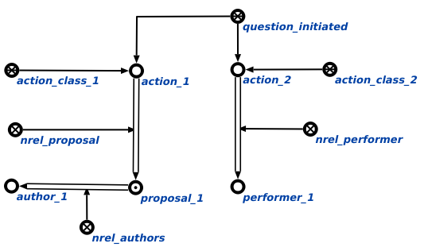

Задачей агента поиска всех инициированных знаков действий является поиск всех инициированных знаков действий. Данный агент инициируется при условии появления в памяти вопросной конструкции, соответствующей действию. найти все инициированные знаки действий. У данного действия нет аргументов. Возможные результаты работы агента:
- Если поиск не дал результатов, то генерируется сообщение "The search hasn't given any results".
- В случае успешного выполнения агента выводятся все инициированные знаки действий, принадлежащие классу действия, которое является ключевым sc-элементом Раздел. Предметная область действий разработчиков sc-моделей баз знаний, соответствующих методике, предполагающей взаимодействие всех разработчиков с семантической памятью и наличием иерархии администраторов (смотреть рисунок). Если у действия имеются предложения и автор предложения или исполнитель, то они также добавляются в результат поиска агента.
